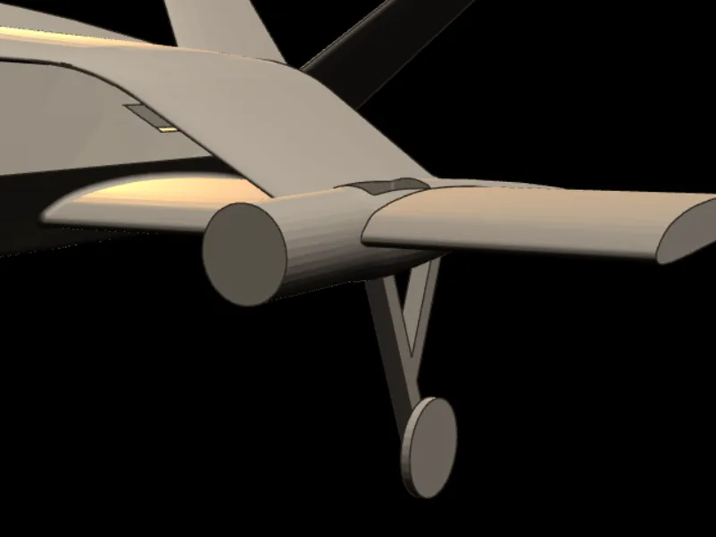
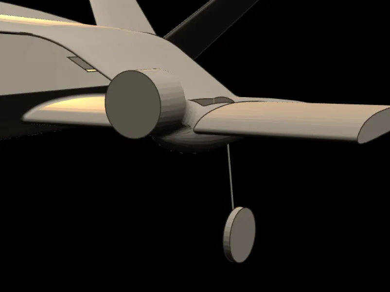
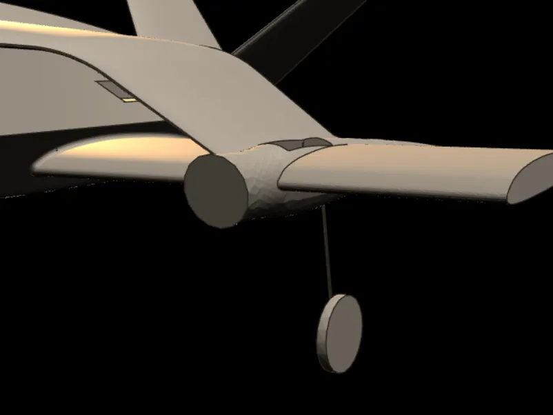
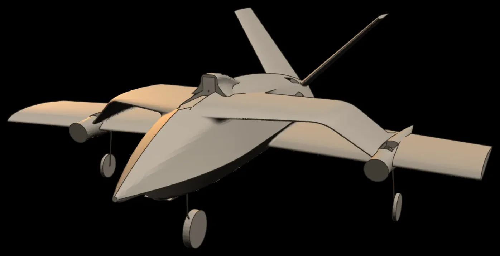
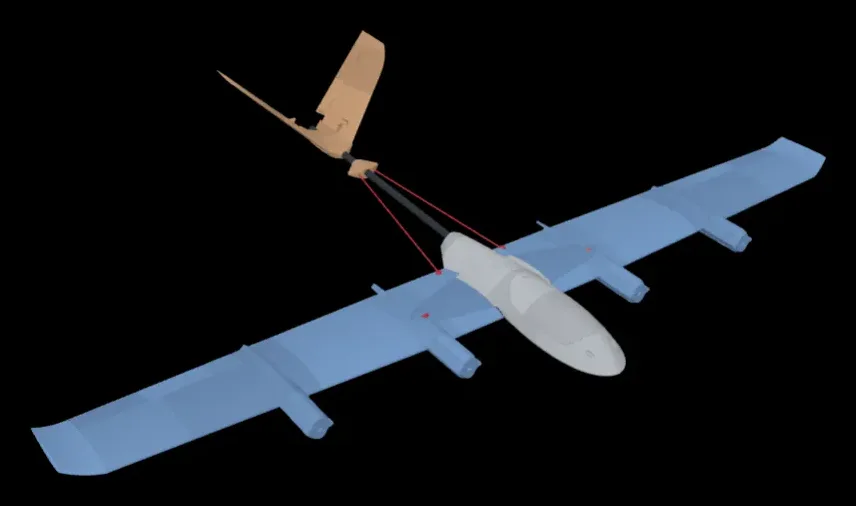
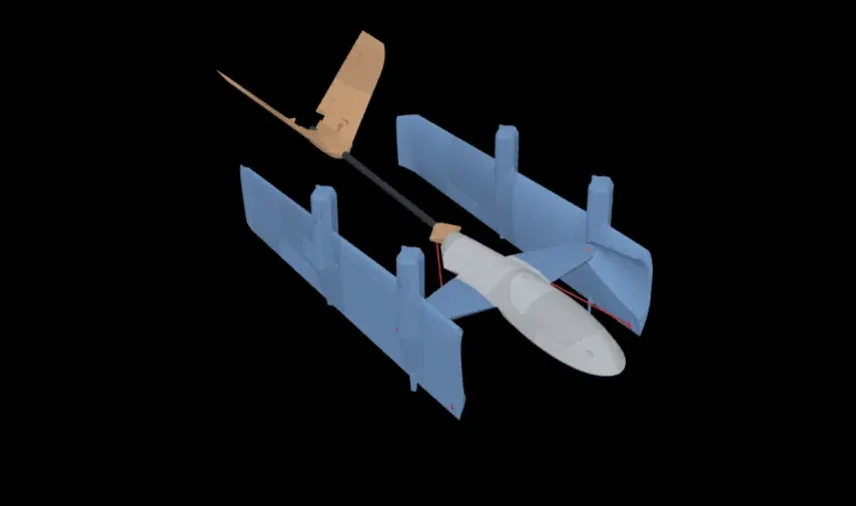

全油門會抬頭，該抬高馬達艙，還是改推力方向？
我比較半環翼各版構型的俯仰與阻力，選出 C7 配置：馬達艙回到原高度、馬達下推 10°。



C7 的阻力係數比 C5 少 11%（CFD：15 m/s、攻角 4°、關動力、皆含起落架）。
看 C7 為什麼這樣改SHAUN SUN · VALKYRIE LAB
我是中央大學機械系學生，正在開發 Hrist 半環翼固定翼。我從機體建模開始，用氣動與飛行模擬比較不同構型，再把結果帶回下一版設計。

半環翼 馬達艙我比較半環翼各版構型的俯仰與阻力，選出 C7 配置：馬達艙回到原高度、馬達下推 10°。



C7 的阻力係數比 C5 少 11%（CFD：15 m/s、攻角 4°、關動力、皆含起落架）。
看 C7 為什麼這樣改我設定基準驗算與設計條件，再用有限元素分析（FEA）比較機架幾何，最後把同一套流程用到 Hrist C7 的結構。

左 17.63 g → 右 15.92 g。暫定工況下的模擬案例，載荷與材料尚未經試片確認。
看最佳化前後我重建原機組合件，用解析幾何與 ADAMS 比對翼尖軌跡。


同一視角。紅線：鉸鏈軸與梭座到翼上固定點的連線。
原機設計 Tim O'Brien（MakerWorld 開源）· 運動學分析 Shaun Sun
看折疊動畫正在進行的專案，只列目前成果和下一步。
嵌入式、App、社團專案和攝影都在全部作品；個人背景和聯絡方式在關於我。